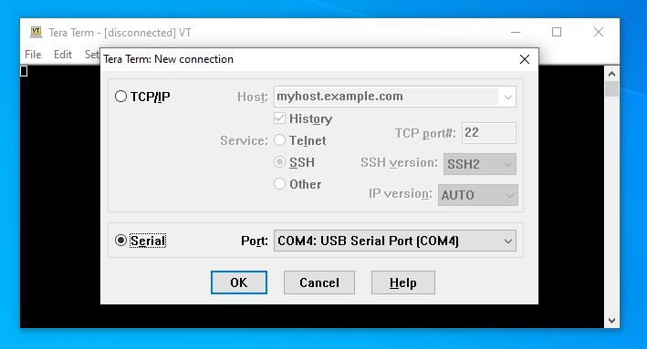
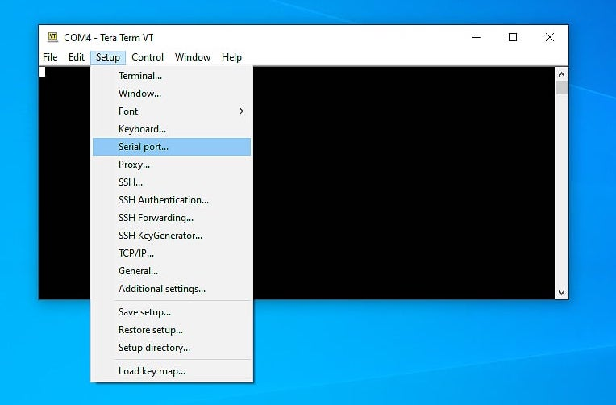
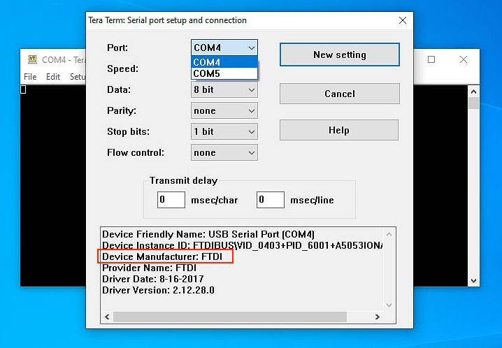
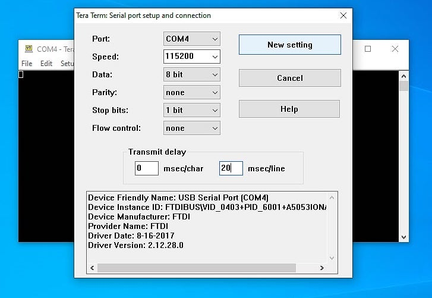
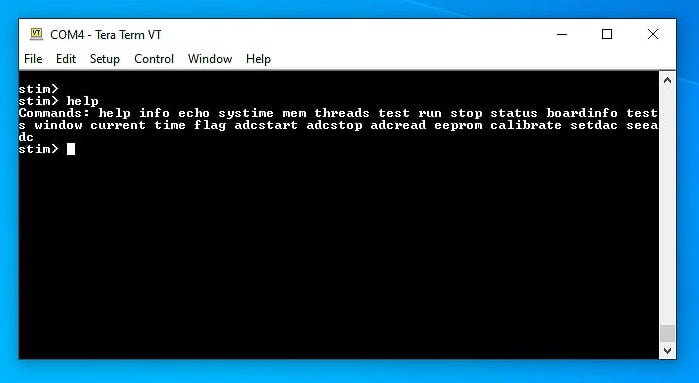
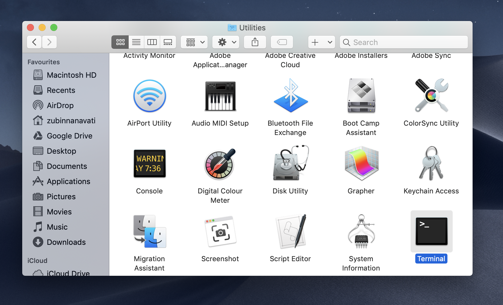
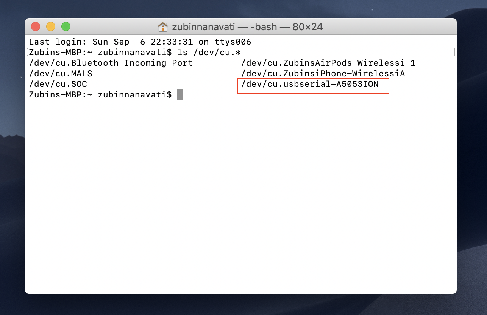
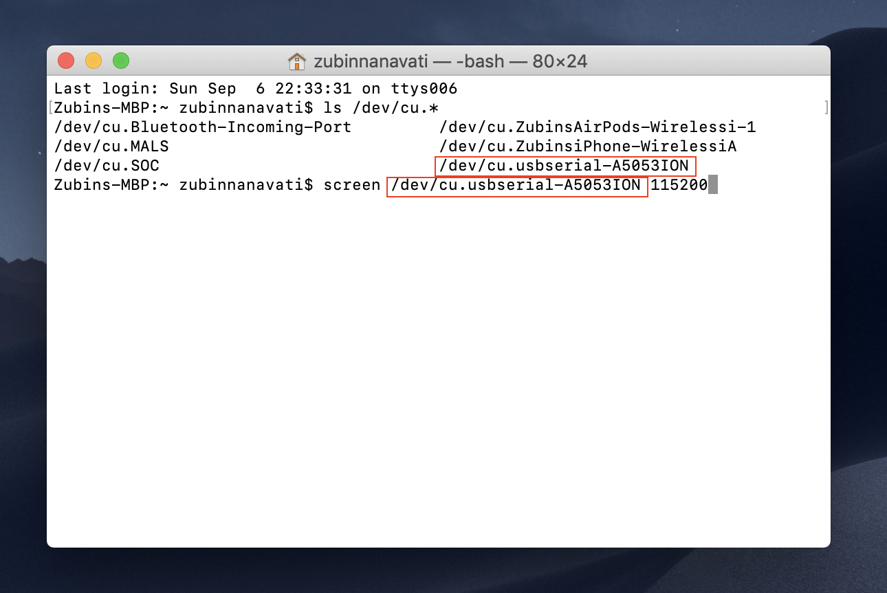
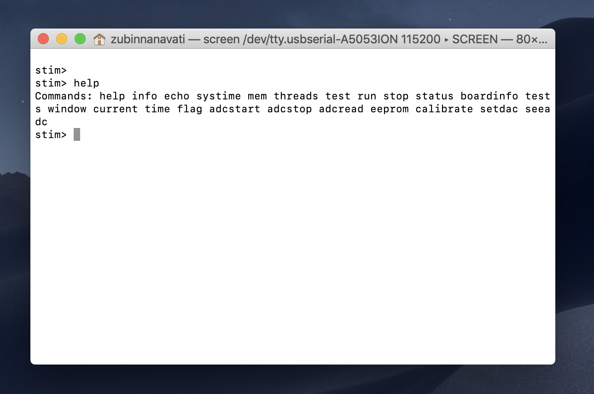
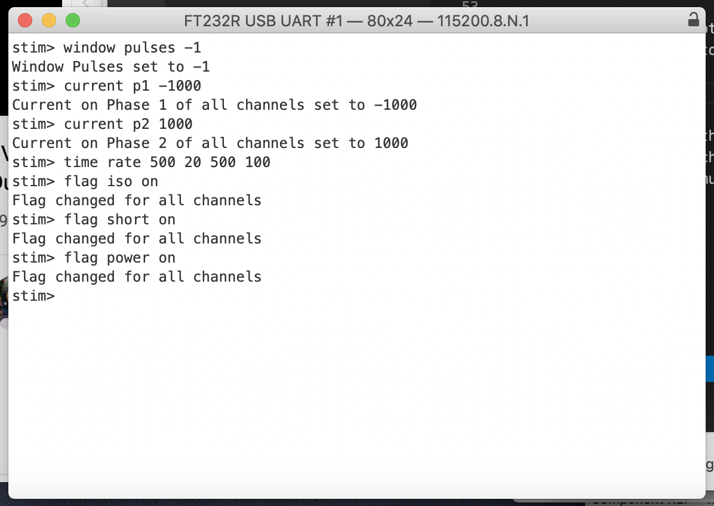

Quick Start Guide
The purpose of this guide is to show the user how to get the stimulator connected to a PC and ready to stimulate as quickly as possible using free software. This guide will cover both Windows and macOS.
Windows
-
Download and install Tera Term.
-
Plug the stimulator into a USB port on the PC using the provided cable.
-
Open Tera Term, the following prompt should appear. Click the Serial text so that the radio button next to it is filled. Then press OK at the bottom of the window. 
-
Click the setup drop down menu and then click the Serial Port... entry. 
-
The following window will appear. Click on the Port drop down menu, if you see only one COM entry then skip this step and go to step 6. If you see multiple entries eg. COM4 and COM5, it means that there are multiple COM ports available on the PC and the correct one needs to be found. Select each of the COM ports in the menu and look at the Device Manufacturer field at the bottom (in red rectangle). Find the port that shows FTDI as the manufacturer. If more than one device comes up with FTDI as the manufacturer, disconnect as many other USB devices as possible to eliminate them as an option. 
-
Set the Speed, Data, Parity, Stop Bits, Flow Control and Transmit Delay to the settings seen in the image below. And press the New Setting button (if you changed the port setting the text on the button may be different but it is still the correct button to press). 
-
Hit the ENTER key on the keyboard and the text stim> should appear, this is the shell prompt provided by the device. Commands like help can be entered followed by hitting the ENTER key to control the device. 
macOS
- Plug the stimulator into a USB port on the Mac using the provided cable.
-
Open Terminal from the Utilities folder in the Applications folder on the Mac using Finder. 
-
Type
ls /dev/cu.*into the window and hit the return (or enter) key on the keyboard. You should get a printout of the available serial devices on the Mac. Look for an entry with the word "usbserial" in it.  -
Type in
screen /dev/cu.PLACE-HOLDER 115200replacing PLACE-HOLDER with the correct text found in step 3. (You can simply copy paste in the text). Don't forget the number 115200, this indicates the correct communication speed of the device. Hit the return key.  -
Hit the return key on the keyboard and the text stim> should appear, this is the shell prompt provided by the device. Commands like help can be entered followed by hitting the return key to control the device. 
Basic Stimulation
Now that the device can be controlled, it can now be set to stimulate some connected electrodes. Follow the steps below to do some basic stimulation. The device will be set to stimulate infinitely until a command to stop is sent.
-
At the
stim>prompt typewindow pulses -1to set the stimulator to stimulate infinitely. Hit the ENTER key. -
At the
stim>prompt typecurrent p1 1000to produce 1000uA during phase 1. Hit the ENTER key. -
At the
stim>prompt typecurrent p2 -1000to produce -1000uA during phase 2. Hit the ENTER key. -
At the
stim>prompt typetime rate 500 20 500 100to set phase 1 time to 500us, interphase to 20us, phase 2 to 500us and the stimulation rate to 100Hz. Hit the ENTER key. -
At the
stim>prompt typeflag iso onto isolate the stimulator from the electrode during the interphase. Hit the ENTER key. -
At the
stim>prompt typeflag short onto short the electrodes during the inter-stim. Hit the ENTER key. -
At the
stim>prompt typeflag power onto turn on the outputs of the stimulator. Hit the ENTER key. -
At the
stim>prompt typerunto start stimulation. Hit the ENTER key. Typestopand hit ENTER to stop stimulating. The orange LED should flash during stimulation.
The interaction with the stimulator using the commands above can be seen in the screenshot below. The stimulator provides feedback on the entry of every command to indicate to the user what parameter has changed, or to let the user know when a mistake has been made on entry. 
The stimulator should then be stimulating using those parameters from all 4 channel outputs. This does not cover the full functionality of the device. For more details on how to control the stimulator proceed to the shell manual.